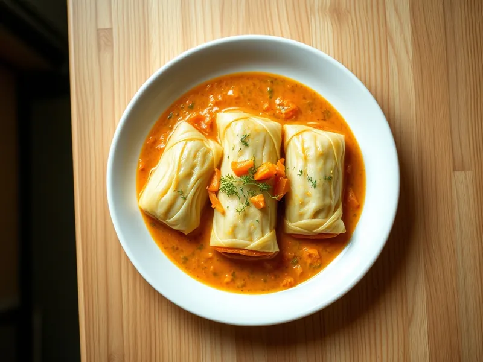

Голубцы с мясом и рисом классические
Капустные листья с фаршем и рисом, тушённые в сметанно-томатной подливке
120 мин6 порц.516 ккал на порциюБ 24 · Ж 32 · У 33Русская кухня
Открыть в приложении: порции, таймеры, список покупок
Продукты на 6 порц.
- Капуста белокочанная1 шт
- Фарш свино-говяжий600 г
- Рис0,6 стак.
- Лук репчатый2 шт
- Морковь2 шт
- Томатная паста2 ст. л.
- Сметана 20%6 ст. л.
- Растительное масло2 ст. л.
- Вода2,5 стак.
- Соль2 ч. л.
- Перец чёрный молотый2 щеп.
- Лавровый лист2 шт
Как готовить
- Вырежьте кочерыжку, опустите кочан в кипящую подсоленную воду на 10 минут и снимайте листья по мере того, как они становятся мягкими. Срежьте ножом толстые прожилки на листьях.
- Отварите рис в подсоленной воде 7 минут до полуготовности, откиньте на сито и остудите. Смешайте рис с фаршем, половиной мелко нарезанного лука, солью и перцем.
- Обжарьте оставшийся лук и тёртую морковь на масле на среднем огне 7 минут до мягкости, добавьте томатную пасту и прогрейте 2 минуты.
- Положите на каждый лист 2 столовые ложки начинки и сверните плотным конвертом.
- Обжарьте голубцы швом вниз на среднем огне по 2 минуты с каждой стороны до лёгкого румянца.
- Уложите голубцы плотно в кастрюлю, сверху распределите зажарку. Разведите сметану горячей водой, залейте голубцы почти до верха и положите лавровый лист.
- Тушите под крышкой на слабом огне 50 минут, пока лист не станет мягким и легко не прокалываться вилкой. Дайте постоять 10 минут.
Совет. Если листья ломаются, заморозьте кочан на ночь и разморозьте: листья станут мягкими без варки. Голубцы хорошо хранятся в подливке 2-3 дня и замораживаются.